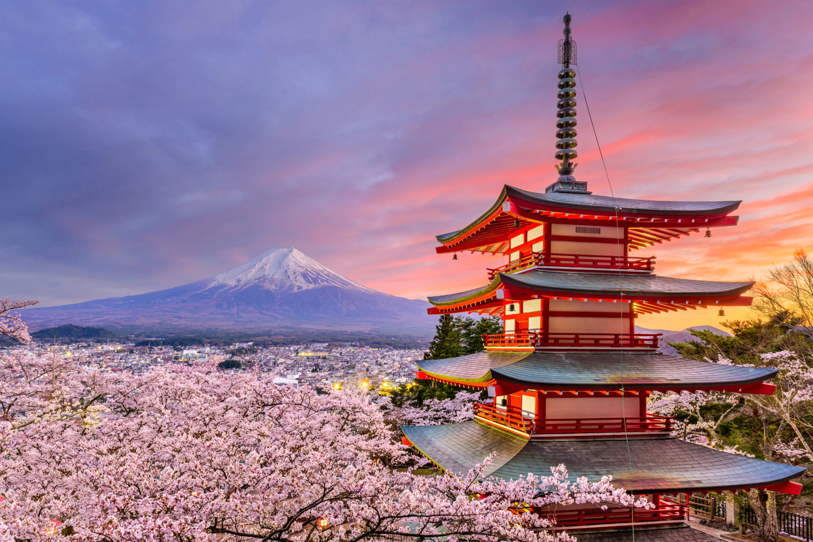
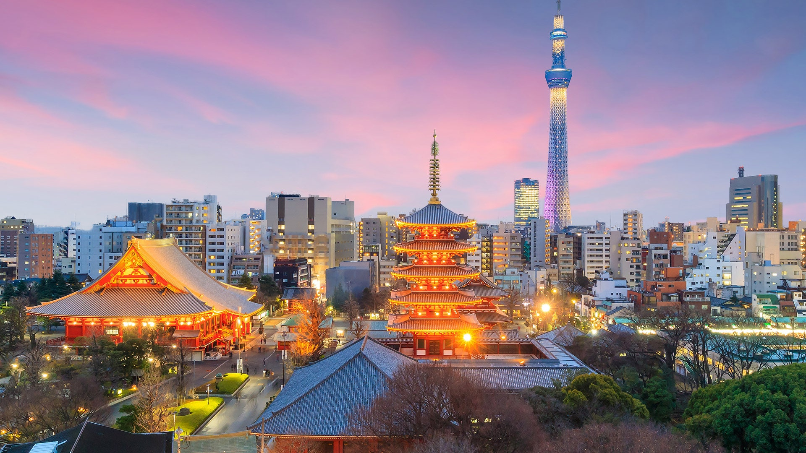
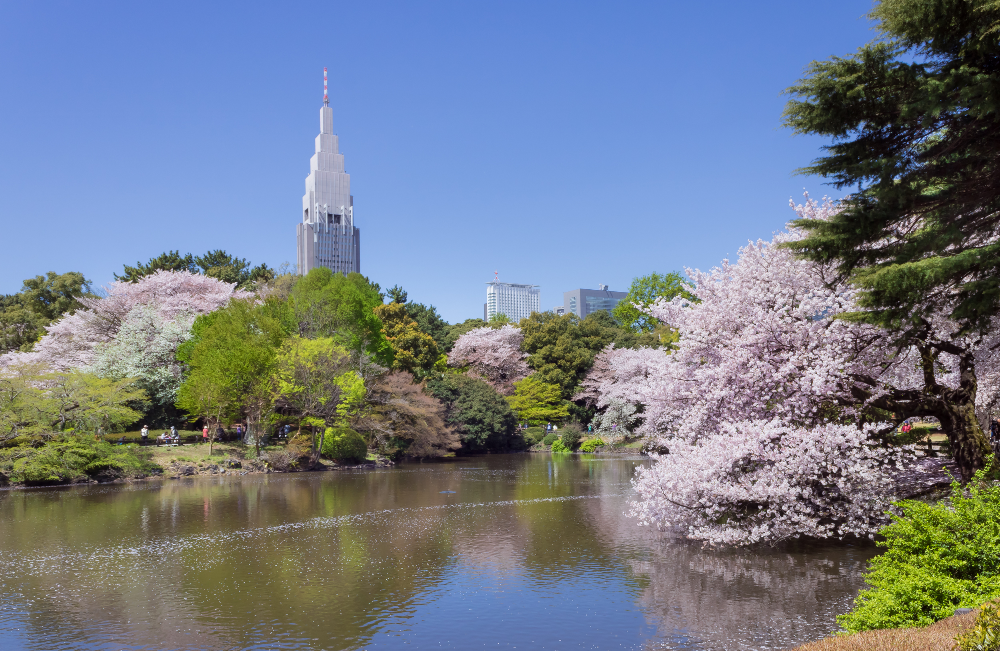
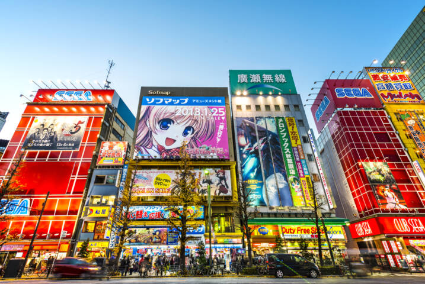

I
AM  A
A  WEEB.
WEEB.

View from Chureito Pagoda (Department of State)
Japan is an island country in the northwest of the Pacific Ocean. Surprisingly it is almost the same size as California, being 93% as big. However, its population is 3 times that of California. Does that make it crowded? Well, mostly in the Kanto region, due to it housing the booming metropolis that is Tokyo.
Japan's major religions are Shinto and Buddhism, where Shintos pray and give offerings to spirits (Kami) to keep away evil and perform rituals to ignite the divine spark, and Buddhists walk a path towards ultimate liberation. These peaceful practices probably play a role in why Japan is considered to be so peaceful with very low crime rates.
When it comes to cuisine, the people of Japan eat mostly whole or minimally processed foods that make up a very healthy diet. Primarily fish, seafood, rice, soy, fruit, and vegetables. This diet is often considered why Japan's life expectancy is 6 more years than the US!
More interesting facts about Japan!

View of Tokyo skyline at sunset (GQ-Magazine)
Tokyo, Japan's enchanting capital, is a mixture of both modern and traditional cultures. In terms of population density, it's around twice that of Los Angeles, CA. The transport system consists of an extensive network of efficient trains and subways, getting you from one place to another.
As for fun there are shrines, temples, huge shopping/dining districts, palaces, beautiful parks & gardens, museums, theatres, and even a Disneyland! For most visitors, the biggest part of the Tokyo experience is just wandering around and absorbing the vibe.

Shinjuku Gyoen during the Spring (Wikipedia)
Often considered the "Central Park of Tokyo," this garden is one of the most popular tourist attractions in Tokyo. The park consists of three different cultural types of gardens in one: Japanese, English, and French! Overall, there are more than a total of 20,000 trees covering 144 acres of land.
If you're a fan of cherry blossom trees, try visiting the Japanese section of the garden during spring, when these trees are in full bloom. There are about 1,000 cherry blossom trees, including early and late blooming ones if you miss the main season!

Akihabara district (Sean Pavone)
I
AM  A
A  WEEB.
WEEB.